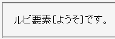
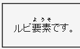

ルビ関連要素（ruby, rb, rp, rt要素など）にdisplayプロパティを指定してもデフォルトの状態から変えることができない。
<style type="text/css">
ruby, rb, rp, rt {
display: inline;
}
</style>
<p>ルビ
<ruby><rb>要素</rb><rp>〔</rp><rt>ようそ</rt><rp>〕</rp></ruby>
です。</p>
ルビ
ruby, rb, rp, rt要素全てをインラインボックス化しています。rb要素の後にrp要素やrt要素が表示されるはずです。
N7.02での表示（標準モード）
WinIE6.0での表示（標準モード）
WinIE6.0では標準・互換モードの両方で不具合の発生が確認されています。